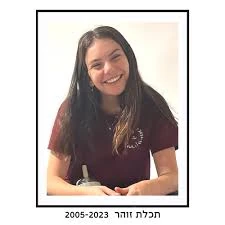

נחל עוז
זוהר תכלת ז"ל
חברת קהילת נחל עוז
סיפור חיים
תכלת זוהר ז״ל, בתם של יסמין ויניב זוהר, נולדה בכ״ט באדר א׳ תשס״ה, 10 במרץ 2005, בקיבוץ נחל עוז. היא הייתה אחותה של קשת ואחותו של אריאל אברהם.
תכלת גדלה בנחל עוז, בתוך משפחה אוהבת, מלוכדת ומחייכת. היא הייתה נערה מלאת שמחת חיים, עם חיוך שהאיר את כל הסובבים אותה. חבריה ובני משפחתה תיארו אותה כאהובה, מקובלת, נעימה ומלאת אור.
תכלת הייתה יפה מבפנים ומבחוץ, תלמידה מצטיינת, רגישה, חברותית ובעלת לב רחב. היא ידעה להפיץ שמחה סביבתית טבעית, להיות חלק מהחבורה, לחבר בין אנשים ולתת לכל מי שהיה לידה תחושה טובה.
היא סיימה 12 שנות לימוד, ובספטמבר 2023 החלה שנת שירות בירושלים. במסגרת שנת השירות התנדבה בפנימיית רבדים, המסייעת לנוער עם אתגרים נפשיים. הבחירה הזו שיקפה את מי שהייתה — צעירה רגישה ואכפתית, שרצתה לתת מעצמה, לראות את האחר ולעשות טוב.
תכלת הייתה חלק מדור הצעירים של קיבוץ נחל עוז. חברת השכבה שלה הייתה קטנה וקרובה, והיא הייתה חלק משמעותי ממנה. שישה היו בתמונת המחזור שלה, ולאחר 7 באוקטובר נותרו ארבעה.
משפחת זוהר נזכרה כמשפחה מאושרת, מחייכת ומלוכדת; משפחה שאהבה את הארץ ואת נחל עוז, וידעה לראות ולקבל את השונה. תכלת נשאה עימה את הרוח הזו — אהבת אדם, פתיחות, שמחה וחום.
שבעה באוקטובר והימים שאחריו בבוקר שבת, שמחת תורה תשפ״ד, 7 באוקטובר 2023, חדרו מחבלים לקיבוץ נחל עוז במסגרת מתקפת הטרור הרצחנית על יישובי עוטף עזה.
באותו בוקר שהו תכלת, הוריה יסמין ויניב ואחותה קשת בבית המשפחה. אחיה הצעיר, אריאל אברהם, יצא לריצת בוקר, ובזכות כך ניצל.
כאשר החלה המתקפה נכנסו בני המשפחה לממ״ד. שעות לאחר מכן פרצו מחבלים לביתם ורצחו את יניב, יסמין, קשת ותכלת.
תכלת זוהר נרצחה בביתה בקיבוץ נחל עוז בכ״ב בתשרי תשפ״ד, 7 באוקטובר 2023. בת 18 בלבד הייתה במותה.
היא הובאה למנוחת עולמים בבית העלמין גני אסתר בראשון לציון.
זיכרון ומילים מהלב תכלת הותירה אחריה את אחיה אריאל אברהם, משפחה רחבה, חברים, חברות וקהילה שלמה שנושאת את זכרה.
היא נזכרת כנערה מלאת אור, שמחת חיים וחיוך מאיר; צעירה אהובה ומקובלת, שידעה להפיץ טוב סביבתה ולהיות משמעותית בחיי כל מי שהכיר אותה.
תכלת תחסר מאוד לחברת הדור הצעיר בנחל עוז, לחבריה, למשפחתה ולקהילה שבה גדלה. החיוך שלה, טוב הלב שלה, שמחת החיים שלה והדרך שבה ידעה להאיר את הסביבה יישארו בלב אוהביה.